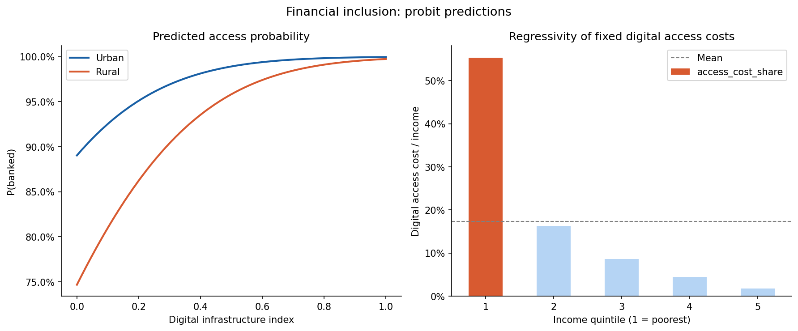

Should We Fear a Cashless Society?
In Sweden, cash has almost been made obsolete. Here, most transactions are done electronically, and the economy thrives. In 2008, the economy in Zimbabwe collapsed due to becoming cashless due to hyperinflation. Same technology, yet very different results. From this, we can learn that cashlessness is not inherently bad. The issue is more with the institutions implementing it. Whether we should fear a cashless society depends entirely on the country.
The Real Dangers
First, the system can collapse. Digital money relies entirely on banks and networks that can fail. Lehman Brothers and Silicon Valley Bank seemed stable until they weren't. When financial institutions collapse, digital money becomes worthless. Cash works whether the power is on or off, whether banks are solvent or not. A large cyberattack on Visa or Mastercard could freeze global commerce in days. Carl Menger's theory of money explains that money must be universally acceptable without requiring verification from an intermediary. Cash does this automatically. Digital money requires trust in institutions that fail. This isn't just about banks either—a natural disaster, a solar flare, or an infrastructure failure at a critical node could trigger a cascading collapse across interconnected systems.
Second, it neglects poorer people and excludes them from the economy. About 1.4 billion people do not have bank accounts, concentrated in rural areas and low-income countries. Research across 123 economies using probit regression shows that digital infrastructure helps wealthy people far more than poor people. Rural households remain 12 per cent behind urban ones even as infrastructure improves (Demirgüç-Kunt et al., 2022). More troublingly, the poorest 20% (the 1st quintile in Figure 1) of people spend roughly 57% of their income on digital access like phones, internet, and account fees. The richest 20% (in the 5th quintile in Figure 1) spend about 2%. That's a 30-to-1 ratio. When Britain shut down ATM networks after 2017, businesses in deprived areas lost significant revenue despite having internet access (Link, 2023). Going cashless doesn't lift the poor—it excludes them completely. There's also a cognitive burden: digital systems demand understanding of security, fraud detection, and password management. For people with limited education, this creates real barriers that infrastructure alone cannot solve.

Figure 1 shows two regression models that I coded in Python. The graph on the left shows the predicted probability of having a bank account by digital infrastructure quality. It also shows the comparison between rural and urban households, and it uses data from the World Bank. However, the right panel shows how digital access costs take up different proportions of household income. It compares the percentages across different “quintiles”. This graph shows us the access gap and the burden on the poorest people, which is much larger than the other quintiles.
Third, it enables unprecedented total surveillance. Aggregated transaction data reveals everything about a person: religious belief from donations, political orientation from protest purchases, health status from pharmacy visits, and fertility status from contraception purchases. India used payment data to identify protesters and targeted their families during 2019-2020 demonstrations (Banerjee, 2020). China enforced spending restrictions on its digital currency so citizens cannot purchase certain goods (BIS, 2023). Hayek identified this risk: privacy in economic life is not a luxury but a prerequisite for political freedom. A citizen who cannot transact privately cannot organise dissent or support unpopular causes (uphold their beliefs). There's also what economists call a 'commitment problem’ where voters might accept cashlessness today for the increased efficiency, but discover later that the surveillance infrastructure is irreversible. Once digital architecture is built, reverting becomes politically and technically impossible.
In addition to this, cash is important as it keeps many informal markets afloat. At first glance, this may be a bad thing, as these transactions are not taxed; however, many informal markets provide essential goods, food, and services in underdeveloped countries, whose governments do not provide them cheaply. For example, in the Brazilian favelas, cash provides millions for the Brazilian workers. By moving towards a cashless society, we would be eliminating all informal economies around the world, leaving many workers helpless.
When Should You Actually Worry?
System collapse matters less in wealthy countries with backup infrastructure and resources. Sweden can recover from a network failure within hours. Poorer countries might not recover for months or years. Financial exclusion is less of a problem if everyone already has digital access. In Scandinavia or North America, almost everyone has access to a phone and a bank account. In rural Africa or Southeast Asia, most people don't. Surveillance matters less if your government is actually constrained by law. In democracies with independent courts, free press, and real data protection laws, courts can block illegal surveillance, and journalists can expose abuses. In countries where the government operates outside the law, there's no legal brake on surveillance. Institutional quality is sticky—determined largely by a country's history (Acemoglu et al., 2001). You cannot quickly build trustworthy institutions just by deciding to go digital. This is why institutional reform is so difficult: the habits, norms, and power structures that enable institutions to function take decades or centuries to develop. A country with weak institutions cannot simply 'adopt' strong ones by passing new laws. Going deeper, cashlessness creates a 'single point of failure.' With cash, the system is redundant and decentralised. With digital, everything funnels through a few companies and governments. Visa and Mastercard handle 90% of global transactions (BIS, 2022). This creates extreme vulnerability. Network science shows that scale-free networks—where popularity compounds—fail catastrophically when hubs are disrupted (Barabási & Albert, 1999). Russia's exclusion from international payments in 2022 demonstrated this: despite having real goods to sell, the country faced economic paralysis. A cashless world has no fallback when these hubs are targeted. Another overlooked challenge is the issue of monetary sovereignty. With the adoption of cashless systems, governments will find it difficult to exercise monetary policy in the case of foreign digital currencies or private stablecoins replacing their national currency. The case of El Salvador with the adoption of Bitcoin highlights this risk, whereby it lost its capability to manage monetary policy, being at the mercy of the volatile cryptocurrency Bitcoin (IMF, 2022). Emerging economies require revenues from seigniorage-the income from issuing money-to fund the basic operations of government.
The Economic Case
From an economic standpoint, the rationale behind cashless systems is based on efficiency considerations and policy implications, especially in cases where there is institutional capacity to handle the risks involved. The first advantage of cashless systems is cost savings resulting from lower transaction fees, which are estimated to be about half that of cash transactions (Humphrey et al., 2003). Though insignificant on an individual basis, cost savings become significant when considered on a large scale.
There is also improved tax compliance by using digital money. The use of cash allows for a “shadow economy” of between 15-20% in advanced countries and in excess of 50% in developing countries (Rogoff, 2016). It has been shown that cross-country studies have indicated that there exists reduced tax effectiveness where more cash is used (Immordino & Russo, 2018).
Another advantage of going cashless is that it will help improve monetary policies. This is because money reduces the ability to cut rates to below zero. The use of digital money would make this possible, as well as fiscal transfer payments, and would speed up monetary transmission.
Nevertheless, such advantages depend upon sound institutional structures, robust infrastructure, good governance, and digital literacy among the citizens. If any of these factors are lacking, then the benefits would not be substantial or realised only by certain individuals who wield power within the country. Furthermore, making a switch from physical money to the digital alternative might result in lower seigniorage gains as governments lose their monopoly powers over currency creation.
So Should You Fear It?
For Scandinavian countries, fears are minimal. For middle-income countries, concerns are justified. For authoritarian regimes, risks are severe due to surveillance and control.
In middle-income economies such as Brazil, Turkey, Mexico, and South Africa, the institutions are less stable. The judiciary is not fully autonomous, the media is restricted, and internet access is not uniform. In such a situation, concerns about cashless economies make sense, because the imposition of such measures could affect the livelihoods of people in the countryside and the informal sector. Surveillance methods can be abused if there is any backsliding from democracy.
Authoritarian or weak states (China, Russia, fragile states) present the greatest risks. Weak governance and unchecked surveillance make cashless systems tools for political control, enabling punishment, financial exclusion, and enforced conformity. China’s social credit system illustrates this potential abuse. However, voluntary digital adoption can still emerge from necessity, as in Kenya’s M-Pesa, where mobile money became essential during hyperinflation. The key distinction is between voluntary adoption for practical benefit versus coercive elimination of cash that concentrates power in the state.
What Actually Makes Sense
The optimal policy structure must allow the individual to exercise their freedom of choice for payment methods. In practice, redundancy in payment methods can act as insurance in case of failure or malfunction in a payment method due to any cause. As an abstract principle, freedom cannot thrive without other choices. Monopolies – whether governmental or commercial – are prone to abuse in the absence of competitive choice.
Privacy by design is essential for digital payment systems. The prevailing payment systems today focus on surveillance, resulting in the creation of extensive user profiles. The potential threats to both privacy and civil liberties through surveillance make the use of cryptographic technologies, decentralisation, and digital currencies a much more secure, affordable, and convenient solution.
The presence of oligopoly in payment systems gives rise to risks of a systemic nature. Visa and Mastercard control about 90% of all card payments and thus expose the system to attacks, which could lead to its failure (BIS, 2022). The need for interoperability and regulatory measures against monopolistic behaviour will make such attacks less likely.
Kenya’s M-Pesa case study shows how implementation can be carried out successfully. Instead of forcing its use via governmental measures, it was adopted because it solved pressing problems like securing transfers and savings from people who lacked access to banks while still maintaining the freedom of choice regarding cash. The greatest benefits included poverty alleviation and more household spending, achieved by women due to their new-found independence in finances (Jack & Suri, 2016). What is essential about the whole process of adoption is that it was voluntary and used alongside cash options.
The philosophical element is also important. According to Hayek, economic freedom is a prerequisite for political freedom; people who cannot engage in private exchanges or who experience constant monitoring of their finances are susceptible to coercion. The use of financial exclusion as a tool by authoritarian governments to suppress opponents, journalists, and NGOs is commonplace. The implementation of a cashless society without any privacy measures increases the risk even more. Access to cash cannot be regarded as an anachronism because it ensures civil rights through financial means.
Conclusion
A cashless society could be an issue only under certain institutional conditions. Electronic payment mechanisms are technology per se. They may either strengthen a nation's democratic institutions and citizens' freedoms or be used to enforce authoritarianism. If a country is democratic, has a solid legal framework, guarantees press freedom, and provides universal digital access, then there is little reason to worry about negative consequences from the transition. However, the matter is much more complicated in non-democratic regimes and weak democracies. The implementation of digital payments could lead to mass surveillance, repression, and exclusion. It is evident from the Chinese model of a social credit score and voluntary adoption of M-Pesa in Kenya. The best way forward is to achieve a balance between freedom, privacy, and resilience. First, paper money must always be a legal means of exchange with equal treatment for everybody. Second, privacy by design must be a standard for digital services. Finally, regulators should guarantee no monopolies emerge because of mandatory interoperability and anti-trust enforcement. Finally, the concern about cashless societies is driven by the quality of institutions. Residents of well-established democracies can adopt digital currency with full conviction, whereas those living in poorly functioning or autocratic systems should be doubtful. The optimal strategy for middle ground cases lies in the gradual and voluntary implementation of digital currency, addressing actual issues while maintaining an option for cash.
References
- Acemoglu, D., Johnson, S. and Robinson, J.A. (2001)
- Banerjee, S. (2020)
- Barabási, A.L. and Albert, R. (1999)
- BIS (2022, 2023)
- Demirgüç-Kunt et al. (2022)
- Humphrey et al. (2003)
- IMF (2022)
- Link (2023)
- Rogoff (2016)